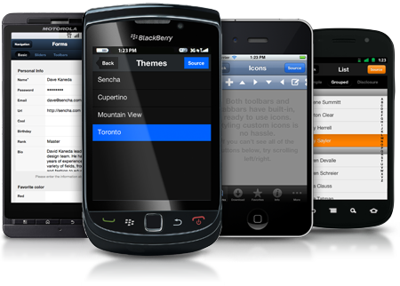

IBM Worklight
Mobile enterprise application platform (MEAP)
Podle Gartneru je vhodné využít MEAP v případě, že:
- Podporujete více než 3 mobilní aplikace
- Podporujete více než 3 operační systémy
- Integrujete s více než 3 datovými zdroji
= pravidlo tří
Existující MEAPs


IBM Worklight

Architektura
Princip
Princip
- Mobil- Javascript obalený do kódu nativní aplikace
- Server- Javascriptové adaptéry (SQL, HTTP, JMS)
- Možnost rozšíření mobilní části přes Cordova pluginy, UI může být také nativní
- Možnost rozšíření serverových komponent přes Java kód
Features
- Json store- zašifrovaný
- Security
- Push notifikace
- Device provisioning
- Přímé updaty
- Testovací scénáře
Ukázka
Praktické zkušenosti
- Performance
- Problémy s loginem
- Dokumentace
- Cena